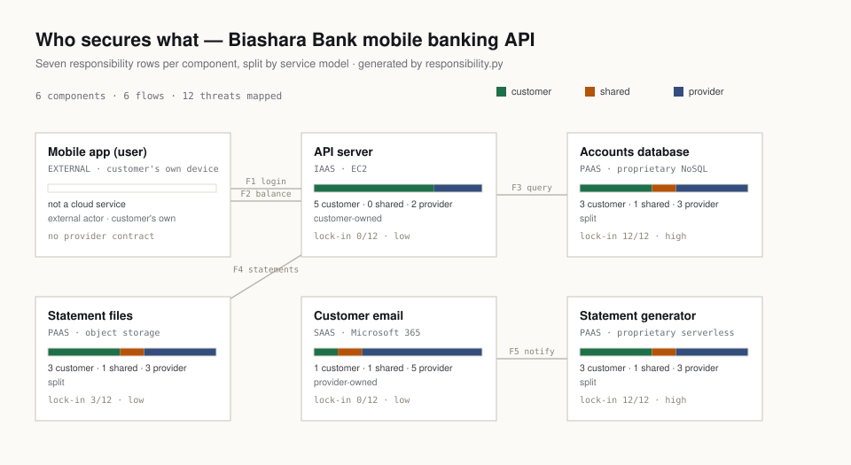

Module 07 — issues, lock-in and principles
Most cloud failures are not hacks. They are misunderstandings about who does what.
“We are ISO 27001 certified, so security is handled” is a sales sentence, not a control. The provider secures the cloud; you secure what you put in it — and the split moves as you move up the stack. This module makes that split computable, applies STRIDE to six data flows, and rehearses an exit from a proprietary store instead of assuming one is possible.
- 9 / 2 / 1
- threats owned by the customer, shared, and the provider — from 12 mapped.
- 12 / 12
- lock-in score for the proprietary database and serverless function.
- 4,000
- records recovered intact in three open formats in an exit rehearsal.
Contents — 13 sections
- 01Six challenges, one word each
- 02The shared responsibility model
- 03The CSA top eleven
- 04Sharing hardware with strangers
- 05Four kinds of lock-in
- 06The 2024 exit-fee waivers
- 07Six principles that travel
- 08Lab: the model, computed
- 09Lab: twelve threats, owners named
- 10Lab: rehearse the exit
- 11Biashara Bank
- 12Five questions
- 13What I take from it
01
Six challenges, and only one of them is about attackers
The deck's list is not a threat model. It is the set of things that actually get raised in a steering meeting.
| Challenge | The concrete problem | Who usually carries it |
|---|---|---|
| Security and privacy | Misconfiguration, account takeover, insider risk on both sides, data exposure | The customer, mostly — the provider's controls are the floor, not the finish |
| Availability | Provider outages and dependence on internet links; an SLA pays credits, not lost revenue | Shared, with the customer owning the architecture that survives an outage |
| Performance and latency | Distance to the nearest region; noisy neighbours on shared hardware | The customer, through design choices |
| Cost control | Idle resources, egress fees, and cryptojacking inflating a bill quietly | The customer — the provider bills what was consumed |
| Legal and compliance | Data residency, cross-border transfer, audit rights | The customer, with the provider supplying evidence |
| Lock-in and skills | Proprietary services make leaving hard; skilled cloud security staff are scarce | The customer, and the market |
Reading down that last column is the module in miniature: five of six land on the customer. The provider's job is to make the floor solid and to document it. Everything above the floor — what you put there, who can reach it, how you would leave — is yours.
02
Security of the cloud, security in the cloud
One table, seven rows, three columns. It answers most arguments about who was supposed to do what.
| Responsibility | IaaS — e.g. EC2 | PaaS — e.g. Elastic Beanstalk | SaaS — e.g. Microsoft 365 |
|---|---|---|---|
| Data classification & accountability | customer | customer | customer |
| Identity & access management | customer | customer | shared |
| Application security | customer | customer | provider |
| Network controls (firewall rules) | customer | shared | provider |
| Operating system patching | customer | provider | provider |
| Hypervisor & host infrastructure | provider | provider | provider |
| Physical data centre security | provider | provider | provider |
Read the diagonal. The bottom two rows never move — nobody but the provider can touch a hypervisor or a data centre door. The top row never moves either: data accountability is always the customer's. Everything in between slides toward the provider as you climb from IaaS to SaaS, and that sliding is where most arguments and most breaches live.
The classic failure is a customer who buys SaaS and stops configuring. Microsoft 365 patches the application, but it will happily let you leave legacy authentication enabled, share a mailbox with an external address, or let a tenant-wide admin account run without MFA. In the model, identity is shared in SaaS — the word is doing a lot of work in that sentence.
03
The CSA top eleven, and why number one is number one
Practitioners ranked what actually hurts. Eight of the eleven are things you configure, not things you buy.
| # | Threat | What it looks like when it happens |
|---|---|---|
| 1 | Insufficient identity, credential, access and key management | A long-lived key in a repo, an over-privileged role, no MFA on the console account |
| 2 | Insecure interfaces and APIs | An unauthenticated endpoint, no throttling, verbose errors leaking internals |
| 3 | Misconfiguration and inadequate change control | A public bucket created on a Friday and never reviewed again |
| 4 | Lack of cloud security architecture and strategy | Every team improvising its own account structure and network layout |
| 5 | Insecure software development | Secrets in build logs, dependencies never scanned, injection reachable from the internet |
| 6 | Unsecure third-party resources | A SaaS integration given broad access, then forgotten when the vendor is replaced |
| 7 | System vulnerabilities | An unpatched image reused for eighteen months |
| 8 | Accidental cloud data disclosure | A backup copied to a share, a support bundle with customer records in it |
| 9 | Misconfiguration and exploitation of serverless and container workloads | A function with a wildcard role, an image with a shell and a cloud credential |
| 10 | Organised crime, hackers and APTs | Credential stuffing at scale, then quiet lateral movement |
| 11 | Cloud storage data exfiltration | A bucket readable by anyone, enumerated from a laptop in minutes |
Number one is not a technology that fails; it is a decision that was never made. Anyone can call CreateAccessKey, and the key works until someone remembers to delete it. The same is true of numbers two, three, four and five — all of them are your configuration, which is why the model in section 02 matters more than the provider comparison in any sales deck.
04
Sharing hardware with strangers
Multi-tenancy is the economic engine of cloud and a category of risk you do not control directly.
| Risk | What it is | What you can do about it |
|---|---|---|
| VM escape | A hypervisor flaw lets code break out of a guest. VENOM, CVE-2015-3456, was a buffer overflow in QEMU's virtual floppy controller reachable from inside a guest. | Patch the host path fast; on IaaS that means trusting the provider's patch cadence and knowing it |
| Side channels | Spectre and Meltdown (2018) showed CPU speculation could leak memory across process and, in principle, VM boundaries. | Microcode and kernel updates; avoid co-locating secrets with untrusted workloads where it is optional |
| Noisy neighbour | Another tenant's workload eats the shared resource you rely on. An availability problem, not a confidentiality one. | Provisioned IOPS, dedicated tenancy or instance types for the critical tier; measure rather than assume |
| Data remanence and isolation | Storage must be wiped between tenants; logical isolation bugs in SaaS can expose another tenant's records. | Encrypt with your own keys; test tenant boundaries in your own app; prefer providers that publish isolation testing |
The honest position: three of these four are the provider's engineering, and your lever is procurement plus monitoring. That is not passivity — it is knowing which risks you can retire with a change and which ones you can only watch, and writing that down.
05
Four kinds of lock-in, and the exit step for each
Lock-in is not one thing. Naming which kind you have is most of the mitigation.
| Form | What creates it | Mitigation |
|---|---|---|
| Data | Proprietary formats and sheer volume | Open formats, regular exports, and a plan for the transfer time — not just the price |
| Egress | Data-transfer-out charges | Know the per-gigabyte rate, model the exit, and keep large data where it will stay |
| Technical | Proprietary APIs and managed services baked into the design | Containers, Kubernetes, Terraform, open-source databases, an abstraction layer at the call boundary |
| Contractual | Long commitments and discounts in exchange for term | Exit clauses, data-return terms, notice periods, price caps |
| Skills | Staff who only know one platform | Vendor-neutral skills, documentation, cross-training |
The fifth row is the one that gets forgotten, and it is the one you cannot buy your way out of. A team that has only ever used one provider's identity model will reproduce that model's assumptions everywhere, and then discover during an exit that it never learned the primitives.
Section 10 puts a number on this: each component in the sample architecture is scored 0–12 across four dimensions, and the two proprietary components come out at 12/12 while the portable ones sit at zero. That score is not a prediction — it is a way to make an argument visible on one line.
06
In 2024 the exit fees were waived — which changes the price, not the problem
Google in January, AWS and Microsoft in March. The EU Data Act pushed harder than any of them.
Egress fees were the most quotable form of lock-in: a rate per gigabyte that made moving a large data set cost real money on the way out. In 2024, under pressure from regulators and the EU Data Act's switching provisions, Google Cloud, then AWS and Microsoft Azure, announced free data transfer for customers moving all their data off the platform, with conditions attached.
| They fix | They leave alone |
|---|---|
| The bill for one migration | The engineering — re-platforming a proprietary API is the expensive part |
| The argument that you are trapped by price | Contractual term, notice periods and credits already committed |
| The regulator's most measurable complaint | Skills: a team that has never run anything else |
So the lesson the deck draws is the right one, and it is not “lock-in is solved”. It is that lock-in is partly a policy and contract problem: read the exit terms, keep data portable, and rehearse an exit for critical systems — because regulators now expect that of banks and other critical sectors, and because a rehearsal is the only thing that turns an exit plan into a fact.
07
Six principles that survive whichever provider wins
Product names change every year. These have not changed in decades.
| Principle | Meaning in the cloud | What it forbids |
|---|---|---|
| CIA triad | Confidentiality, integrity and availability as the test for every decision | Choosing one silently — encryption that takes the service down is not a win |
| Defence in depth | Identity, network, host, application, data, monitoring — each assuming the one above failed | A single control described as "our security" |
| Least privilege | Only the permissions needed, only for as long as needed | AdministratorAccess granted to save an afternoon |
| Zero trust | Never trust by network location; verify every request (NIST SP 800-207) | “It's inside the VPC, so it's fine” |
| Separation of duties | No one person can deploy, approve and delete critical resources alone | A single admin role that can do all three |
| Assume breach | Design detection, containment and recovery as if attackers are already inside | Architectures where the only control is the perimeter |
Zero trust is the one most often misfiled as a product. It is a statement about evidence: an authenticated, authorised request from inside your own network is not more trustworthy than one from outside, because the attacker who matters is already inside. NIST SP 800-207 is the reference that makes it concrete — identity as the control plane, per-request evaluation, and no implicit trust from where a packet came from.
08
Lab: the model, computed rather than coloured in
The worksheet asks for a diagram coloured by hand. A rule table does it reproducibly — and shows its reasoning.
labs/week07 · architecture.json, responsibility.py, exit_drill.py · output: report.json, diagram.svg
Six components, six data flows, taken from the deck's sample architecture and given one extra component — a proprietary serverless function — because the case study turns on proprietary services. The tool encodes the seven-row model, walks every flow against eleven STRIDE rules keyed to measurable properties, matches each finding to a CSA threat and derives the owner from the model itself.
python3 labs/week07/responsibility.py12 threats
$ python3 responsibility.py architecture: Biashara Bank mobile banking API 6 components, 6 data flows component split Mobile app (user) external not a cloud service API server iaas customer 5 · shared 0 · provider 2 -> customer Accounts database paas customer 3 · shared 1 · provider 3 -> split Statement files paas customer 3 · shared 1 · provider 3 -> split Customer email saas customer 1 · shared 1 · provider 5 -> provider Statement generator paas customer 3 · shared 1 · provider 3 -> split who owns the work 9 threats customer (the bank's team) 2 threats shared — provider supplies it, customer must configure it 1 threat provider 12 threats mapped across 6 CSA categories

Two things fall out of the numbers that a hand-coloured diagram would hide. First, a PaaS component is genuinely split three ways — the database and the function have three customer rows, one shared and three provider, which is why “who owns it” has no single answer at that layer. Second, the customer keeps nine of the twelve threats, against one for the provider.
09
Lab: twelve threats, each with a named owner
STRIDE on every flow, matched to the CSA list, with the control and the party who pays for it.
The worksheet's deliverable is a table: threat, STRIDE category, control, owner. Here it is, generated from the architecture file — a threat only appears because a property of the flow or component made it true.
| Flow | STRIDE | Threat | CSA | Owner |
|---|---|---|---|---|
| F1 login | Spoofing | A human session needs only a password | 1 | customer |
| F2 balance | Elevation of privilege | Changing an identifier reaches another account's data | 1 | customer |
| F3 query | Repudiation | Actions on the query path leave no attributable record | 3 | customer |
| F3 query | Denial of service | Nothing limits how hard the query path can be called | 2 | shared |
| F3 query | Elevation of privilege | Service credentials reach every account, not one | 1 | customer |
| F3 query | Information disclosure | Personal data with no field-level protection | 8 | customer |
| F4 statements | Denial of service | Statement generation is unbounded | 2 | shared |
| F4 statements | Information disclosure | Statement files readable without an authenticated identity | 11 | customer |
| F4 statements | Information disclosure | Personal data with no field-level protection | 8 | customer |
| F5 notify | Denial of service | Send volume is unbounded | 2 | provider |
| F5 notify | Spoofing | Mail can claim any sender domain | 6 | customer |
| F6 admin | Spoofing | An admin session needs only a password | 1 | customer |
One row is worth arguing about, and the tool records the argument rather than hiding it: SPF, DKIM and DMARC are DNS records the bank controls, so sender authentication stays the customer's even on a SaaS mail platform, where the model says application security is the provider's. The three-column model does not draw that edge. Every real architecture has a few of these, which is why the model is a starting point for a conversation and not an answer key.
10
Lab: rehearse the exit, and prove it was complete
An exit plan is a claim. An exit rehearsal is evidence — row counts, checksums, and a cost.
The second deliverable the worksheet asks for is two lock-in risks with an exit step each. Rather than describe one, the lab performs it: a local stand-in for a proprietary document store (opaque pk/sk keys, a column map, a vendor version stamp) is exported into three open formats, and the export is verified field by field.
python3 labs/week07/exit_drill.pypassed
$ python3 exit_drill.py source proprietary_store.json · AcmeNoSQL/2.1 · table 'accounts' 4000 documents, provider-specific shape (pk/sk/cols) integrity sha256 2cdc7866d94961de5febd0f87b931646… every field of every record, canonical order csv 4000 records match json 4000 records match sqlite 4000 records match transfer exported 1,212.2 KiB in 61 ms egress cost $0.000104 at $0.09/GB (pre-2024 rates) with waiver $0.00 — the 2024 exit-fee commitments cover this case over 100 Mbps 0.10 s of link time for this volume exit rehearsal passed — 4000 of 4000 records recovered in three open formats
The three formats matter: CSV for the finance team, JSON for the new service, SQLite as proof that the data is not just dumped but usable — a schema, a primary key, a query. A backup nobody can query is a folder of bytes.
The numbers also make the argument about what actually costs money. This volume's egress is a tenth of a cent, and the 2024 waiver takes even that. The expensive part of an exit was never the transfer rate — it is rewriting a proprietary API and retraining the team, which is why the lock-in score counts the API and the skills, not only the bytes.
11
Biashara Bank: a vendor, a five-year discount and a nervous committee
Every question the committee asks has an answer in the previous nine sections.
The bank is moving a mobile banking API to a public cloud. The vendor says ISO 27001 means security is handled. The plan is proprietary serverless, a proprietary NoSQL database, and a five-year discounted contract. The committee wants to know about price rises, long outages, a regulator-forced move, and whether other tenants could see the bank's data.
| Question | Answer | Section |
|---|---|---|
| Does ISO 27001 mean security is handled? | No. It certifies the provider's controls and processes; your data, identities, configuration and application remain yours. | 02 |
| What happens if they raise prices? | Without a price cap and an exit clause, you accept them — the discount is priced against your inability to leave. | 05, 06 |
| What if the outage lasts a week? | Credits are not revenue. Multi-region or a runnable alternative, tested, is the only real answer. | 01 |
| What if the regulator requires a move? | Then the exit becomes an exercise, not a plan — which is why it is rehearsed now. | 10 |
| Can other tenants see our data? | Not by design; isolation is the provider's engineering, and encryption with your own keys is your lever. | 04 |
The answer the deck wants for “should the bank accept proprietary services at all” is: yes, with conditions — that the call boundary is narrow and wrapped, that the data is exportable and exported on a schedule, that the contract has an exit clause with a data-return format and a timeline, and that someone other than the vendor knows how the system works. Proprietary is not a sin; unmeasured proprietary is.
12
Five questions on Biashara Bank
Scenario in section 11. Answer, then compare.
13
What I am taking from module 07
- 01The model is a tool for arguments, not a poster. Nine of twelve threats were the customer's on an architecture I picked myself.
- 02Every step up the stack moves work to the provider — except data accountability, which never moves.
- 03“Shared” is the dangerous word. It means the provider supplies a control and nobody configures it.
- 04Lock-in is four problems wearing one name: data, API, contract, skills. Name which one before proposing a fix.
- 05An exit plan is a claim; a rehearsal with checksums is evidence. Waived fees made leaving cheaper, not easy.
- 06The principles outlive the platforms: least privilege, zero trust, assume breach — the rest is product naming.
next — module 08
Identity and access management with AWS IAM →
Users, roles, policies and MFA — the controls that top the CSA list.
Reading
- CSA, Top Threats to Cloud Computing: Pandemic Eleven (2022)
- NIST SP 800-144 — Guidelines on Security and Privacy in Public Cloud Computing
- NIST SP 800-207 — Zero Trust Architecture
- Buyya et al. (2011), Ch. 23